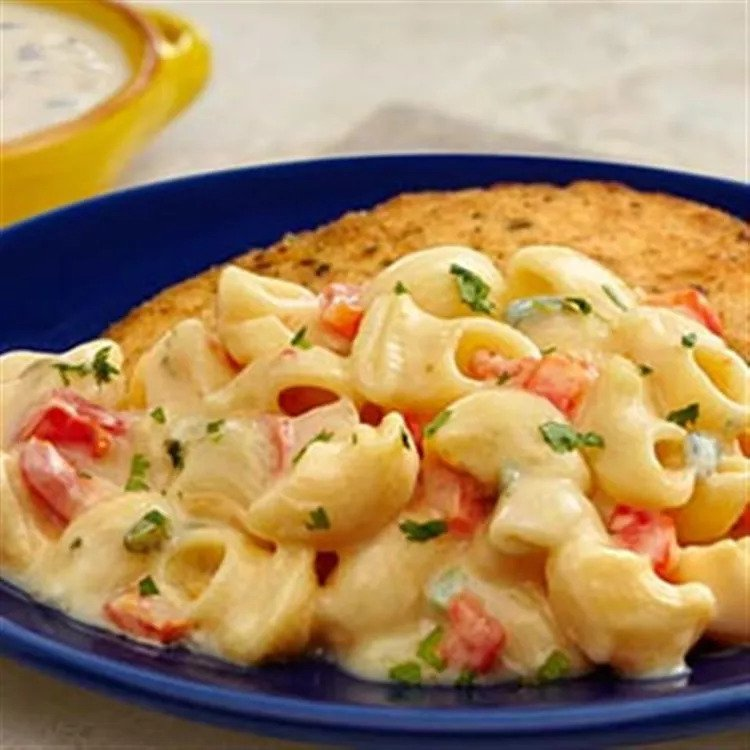

Mac&Cheese

Description:
Mac & cheese goes from ordinary to extraordinary with the addition of sautéed fresh vegetables and creamy poblano & queso soup. This crowd-pleasing casserole is incredibly good, easy to prepare and sure to earn rave reviews!
Ingredients:
- 1 tablespoon butter
- 1 medium onion, chopped
- ½ cup red bell pepper, chopped
- 1 cup medium tomato, chopped
- 1 clove garlic, chopped
- ⅛ teaspoon salt
- ⅛ teaspoon ground black pepper
- 11 (10.75 ounce) can Campbell's® Condensed Creamy Poblano & Queso Soup
- ¾ cup milk
- 1 cup shredded Cheddar cheese
- 8 ounces elbow macaroni, cooked and drained
- 2 tablespoons chopped cilantro
Steps:
- Heat the butter in a 3-quart saucepan over medium-high heat. Add the onion and pepper and cook for 5 minutes or until the vegetables are tender, stirring occasionally.
- Add the tomato and garlic to the saucepan and cook and stir for 1 minute. Season with the salt and black pepper.
- Stir in the soup and milk and heat to a boil. Remove the saucepan from the heat. Add the cheese and stir until melted. Stir in the macaroni. Sprinkle with the cilantro.